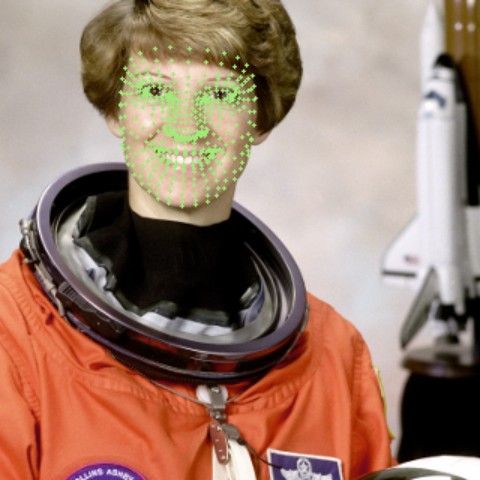
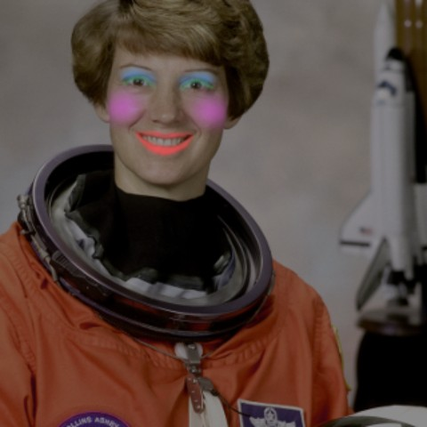

Point your camera at yourself — or drop in a photo — and this studio tracks 468 facial landmarks in real time to apply lipstick, eyeshadow, eyeliner and blush that follow your face. The color goes on like pigment, not paint: skin texture stays, teeth stay clean, and everything scales with your face.
Private by design — every frame is processed on your device. Nothing is uploaded, ever.
demo portrait · pick shades below, or start your camera
The same engine ships as a Python package (photos, batch, CLI) and runs here in JavaScript with the identical face topology. This is everything it does:

MediaPipe FaceMesh finds the exact contours of lips, eyelids, brows and cheeks in every frame — so the makeup knows precisely where the features are.

Every region is feathered and sized as a fraction of the distance between your eyes, so one look fits every face and camera. The lip mask subtracts the mouth opening — lipstick can’t touch teeth.
Color is applied in the CIELAB space: chroma moves toward the shade while lightness — where pores, creases and highlights live — is mostly preserved. It reads as makeup, not paint.
The repo ships a benchmark that runs this engine and four naive baselines — mismatched landmark indices, opaque polygon fills, an RGB/BGR channel swap, an untrained GAN — over 25 real portraits, and scores where the pigment actually went.
Edit energy inside legitimate makeup regions (lips, lids, lashes, cheeks). Naive index mistakes put most pigment on the chin.
Correlation of lip-region lightness before → after. Opaque fills flatten pores and creases; CIELAB tinting keeps them.
Fraction of pixels outside the face that are bit-identical to the input. A channel swap recolors ~98% of the image.
A popular but broken metric: grayscale SSIM against a with-makeup photo rates a channel-swapped blue face 0.527 — statistically identical to the best method. Makeup is color; a metric blind to color can’t judge it. That’s why the three charts above exist.
Installable package with a CLI and an importable API — presets or per-product colors and intensities, fail-fast validation, 50 tests, MIT license.
# install $ pip install git+https://github.com/safdar-hussain1/virtual-makeup # one command, three presets $ vmakeup apply selfie.jpg out.jpg --preset classic # or mix your own look $ vmakeup apply selfie.jpg out.jpg \ --lipstick "#8E1B3A" --lipstick-intensity 0.9 \ --eyeshadow "#5C3A6E" --smoothing 0.3
# python >>> import cv2 >>> from virtual_makeup import MakeupLook, apply_makeup >>> look = MakeupLook(lipstick_color="#B03A5B", ... blush_intensity=0.35, ... smoothing=0.25) >>> out = apply_makeup(cv2.imread("selfie.jpg"), look) >>> cv2.imwrite("out.jpg", out)